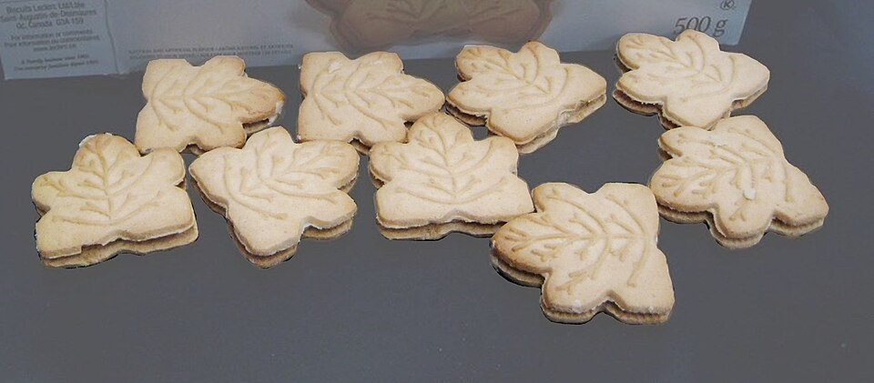

Doces · Biscoitos
Biscoitos de nata

Ingredientes
- 2 colheres (sopa) de margarina
- 10 colheres (sopa) de açúcar
- 1 pitada de sal
- 1 xícara (chá) de nata
- 1 colher (chá) de fermento em pó
- Farinha de trigo até dar o ponto
Modo de preparo
- Misture todos os ingredientes até desgrudar das mãos.
- Faça bolinhas médias.
- Se desejar, decore com carimbo de biscoitos.
- Unte uma forma, disponha os biscoitos e asse em forno preaquecido a 180 °C até dourar.